Events, Flyers & Community Pieces
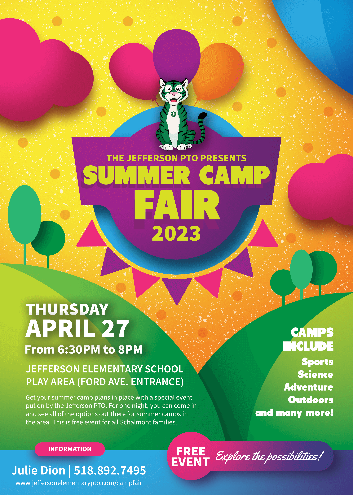

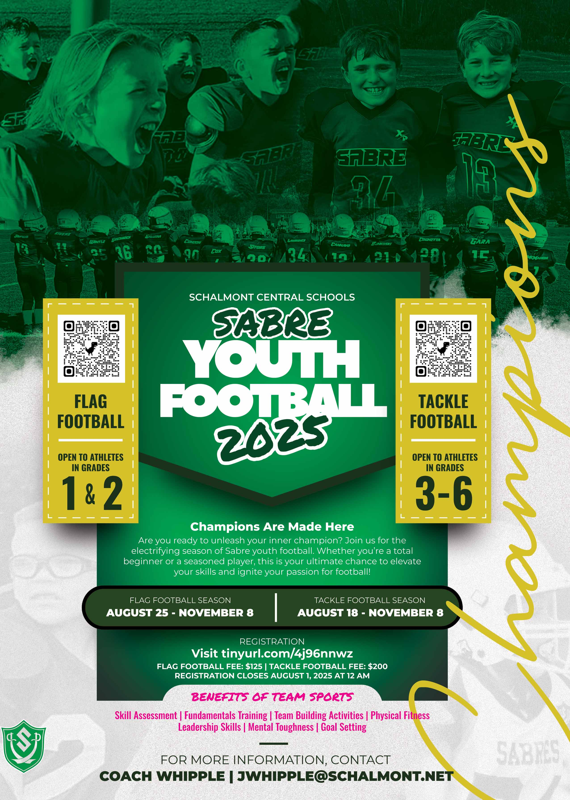
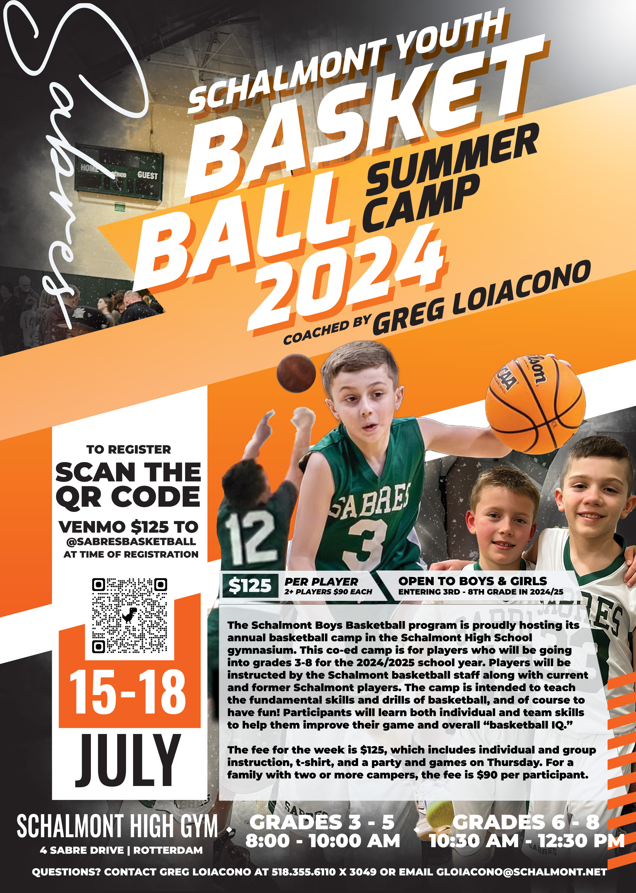
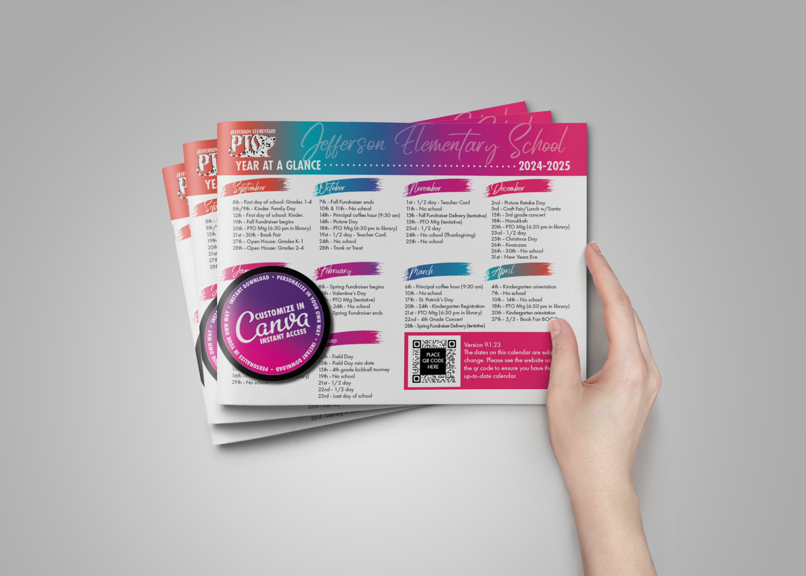

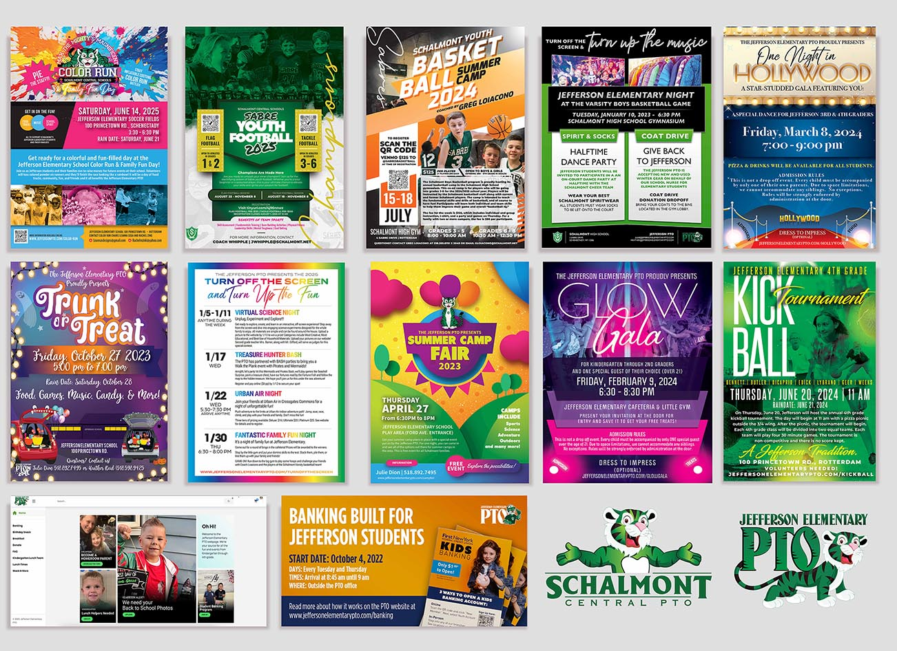

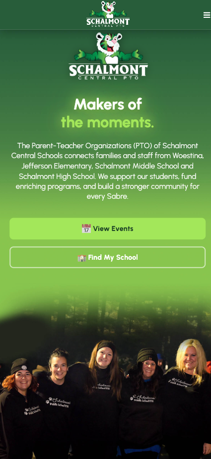
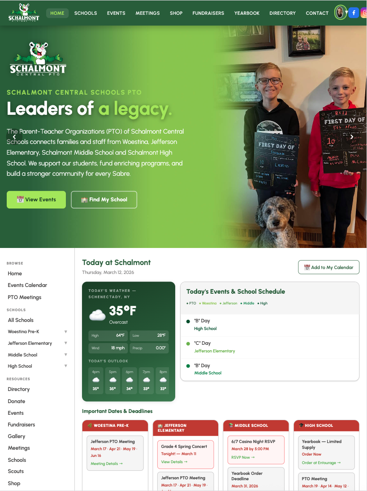
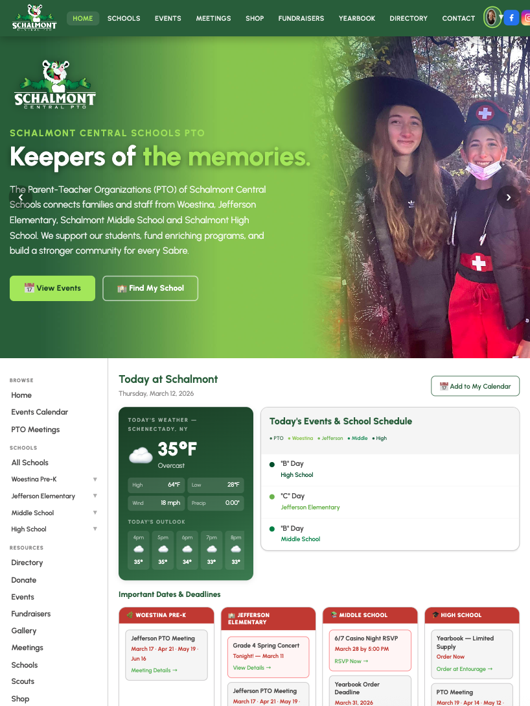
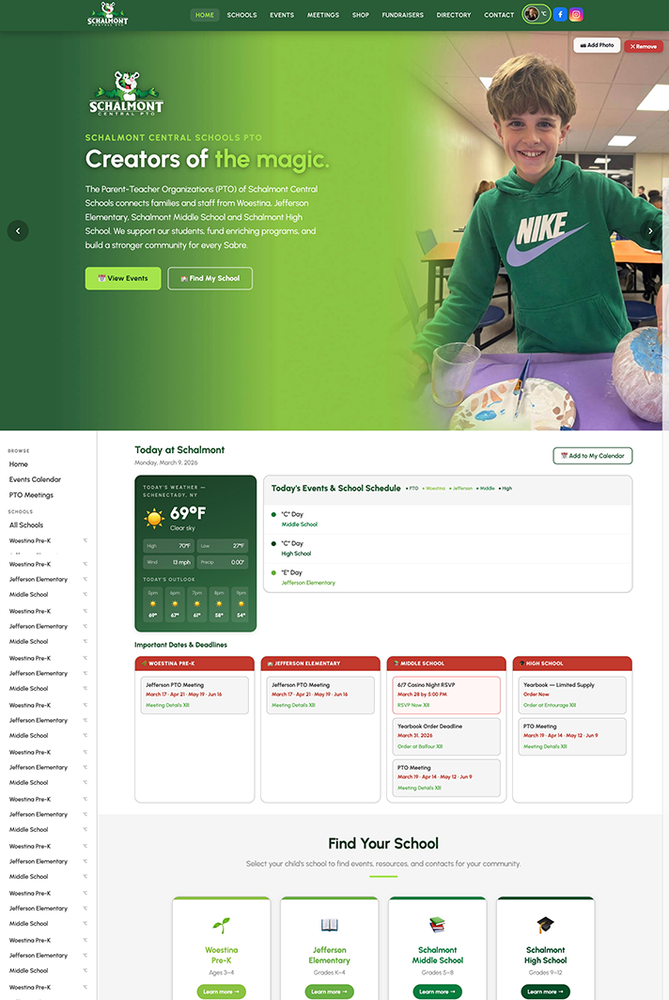
As PTO President for Schalmont & Jefferson Elementary Schools, I designed and built the community web platform, created the full event marketing suite — Color Run, Glow Gala, Trunk-or-Treat, spirit wear, and fundraising materials — and unified two schools' visual identity.
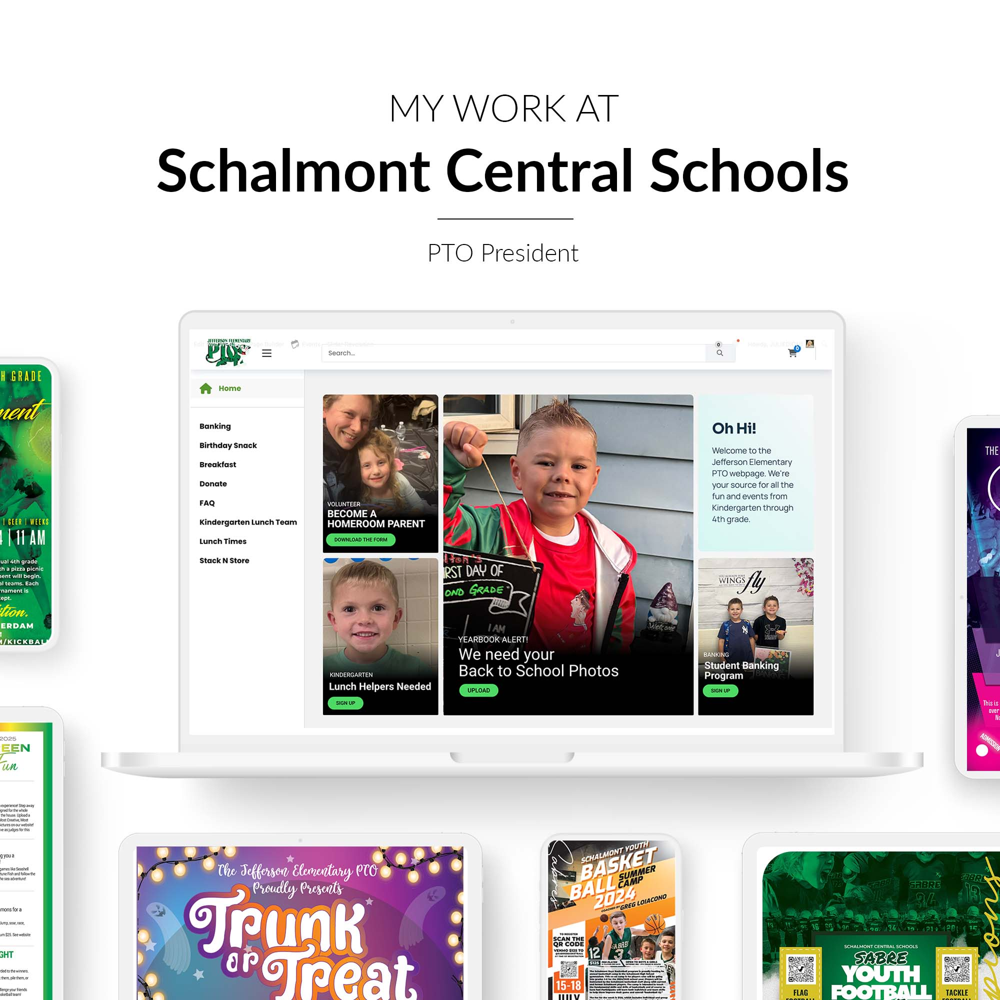
When I stepped into the PTO President role, both Schalmont Central Schools and Jefferson Elementary had fragmented communications — no unified website, inconsistent event materials, and no centralized fundraising platform. Parents were missing events. Volunteers weren't connecting.
I designed and launched a full community web platform covering both schools, created a consistent event branding system, and produced everything from Color Run flyers to Glow Gala invitations — all while serving as the executive leader of both PTOs.
The PTO website serves as the central communication platform for both school communities — featuring sports & athletics listings, fundraiser pages, event calendars, spirit wear shops, and PTO meeting information. I designed the full site architecture, visual design, and navigation system.
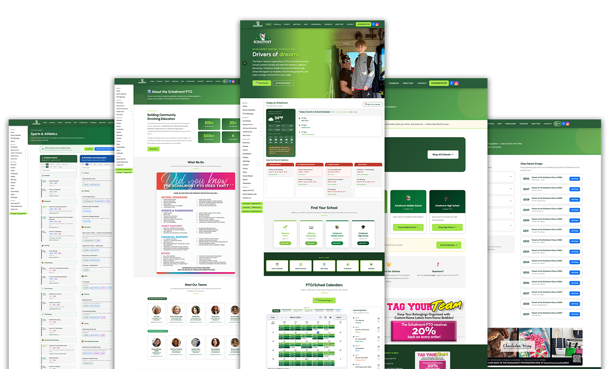
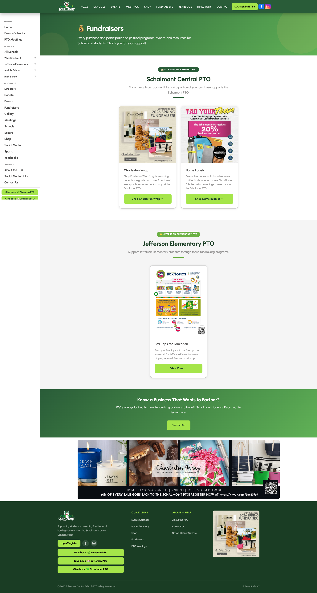
Every PTO event needed its own identity while staying visually connected to the school community brand. The Color Run flyer — featuring mascot "Max the Mighty Tiger" — became a community favorite. I designed event materials for Color Run, Glow Gala, Trunk-or-Treat, Basketball Night, Football Night, and Camp Fair.
Each piece was designed to generate excitement, communicate logistics clearly, and drive attendance — using high-energy color palettes, mascot illustrations, and bold typography matched to each event's theme.
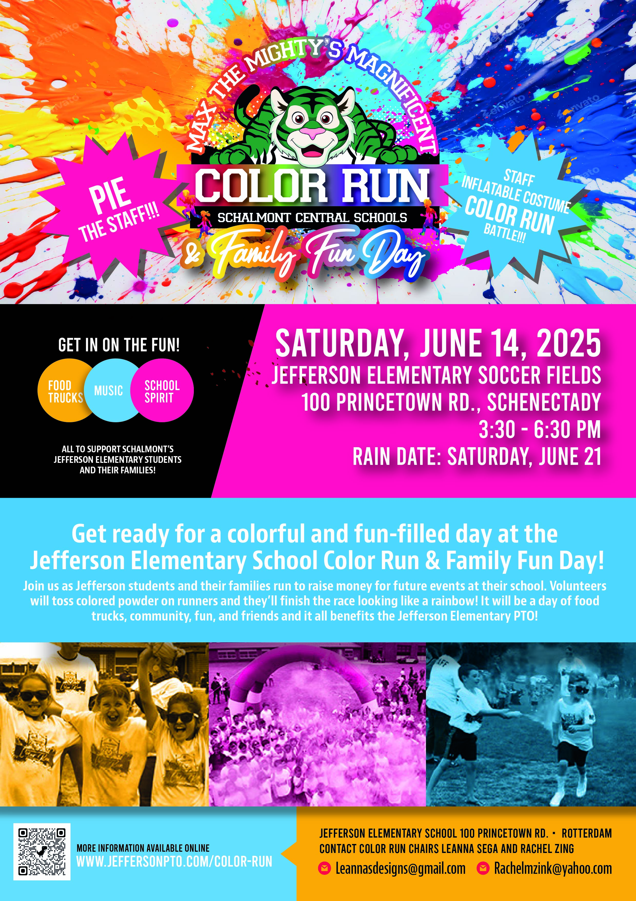
The PTO website's sports section became one of the most-visited pages — listing every youth athletic program available in the Schalmont and Rotterdam communities. I designed the full directory system, complete with registration links, contact information, and sport categories spanning baseball to skating to judo.
The site eliminated the need for individual sports coaches to maintain their own pages, centralizing information parents previously had to hunt for across dozens of separate websites.








